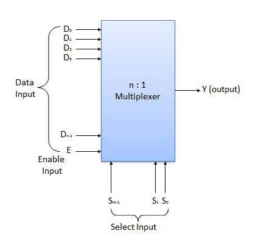
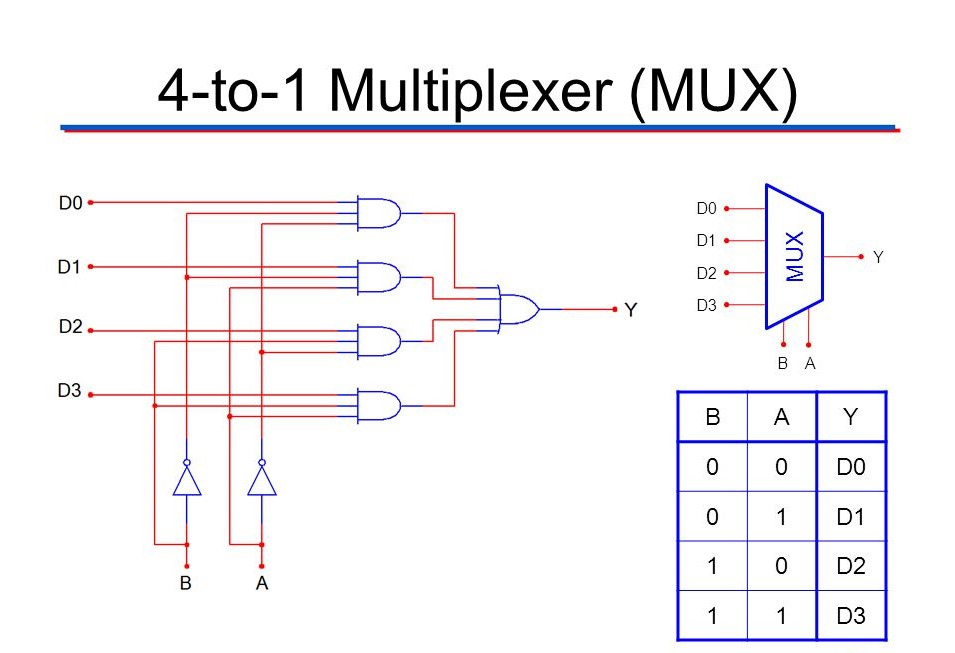
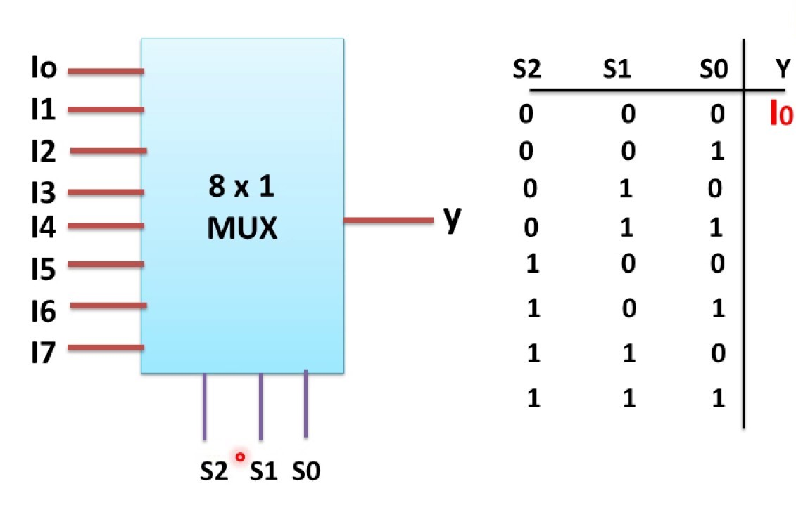
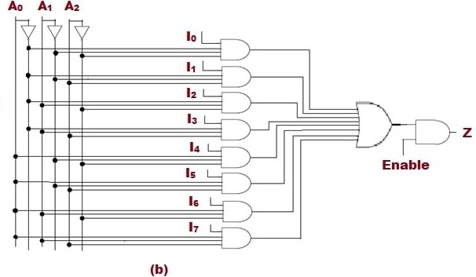
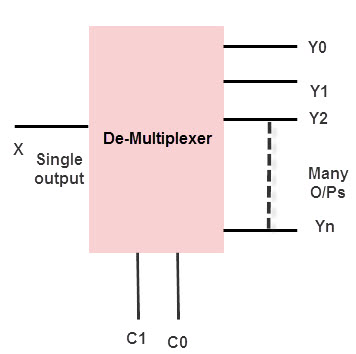
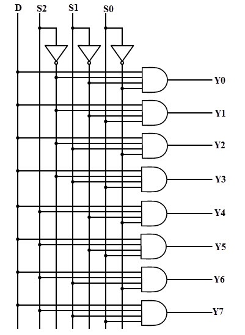
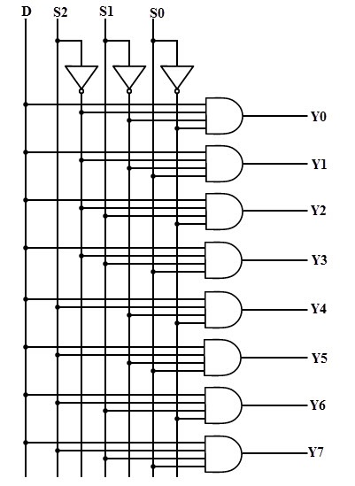

It is a combinational circuit which have many data inputs and single output depending on controlor select inputs.For N input lines,
log n (base2) selection lines, or we can say that for 2n input lines, n selection lines are required.
Multiplexers are also known as "Data n selector, parallel to serial convertor, many to one circuit, universal logic circuit".

4:1 MULTIPLEXER
VHDL CODE:
library ieee;
use ieee.std_logic_1164.all;
entity 4mux is
port(
s1,s2,i1,i2,i3,i4: in std_logic;
o: out std_logic
);
end entity 4mux;
architecture behaviour of 4mux is
begin
o < = (((s1 and s2) and i1) or (s1 and (not s2) and i2)or
(((not s1) and s2 and i3) or
((not s1) and (not s2) and i4));
end architecture behaviour;
Another form of code
library ieee;
use ieee.std_logic_1164.all;
entity 4mux is
port(
s: in std_logic_vector(1 downto 0);
i: in std_logic_vector(3 downto 0);
o: out std_logic
);
end entity 4mux;
architecture behaviour of 4mux is
begin
o < = i(0) when s="00" else
i(1) when s="01" else
i(2) when s="10" else
i(3) when s="11" else
'0';
end architecture behaviour;
DIAGRAM:

8:1 MULTIPLEXER
VHDL CODE:
library ieee;
use ieee.std_logic_1164.all;
entity 8mux is
port(
s: in std_logic_vector(2 downto 0);
i: in std_logic_vector(7 downto 0);
o: out std_logic
);
end entity 8mux;
architecture behaviour of 8mux is
begin
o < = i(0) when s="000" else
i(1) when s="001" else
i(2) when s="010" else
i(3) when s="011" else
i(4) when s="100" else
i(5) when s="101" else
i(6) when s="110" else
i(7) when s="111" else
'0';
end architecture behaviour;
DIAGRAM:


Demultiplexer
A demultiplexer (or demux) is a device that takes a single input line and routes it to one of several digital output lines.
A demultiplexer of 2n outputs has n select lines, which are used to select which output line to send the input. A demultiplexer
is also called a data distributor.

1:8 DEMULTIPLEXER
VHDL CODE:
library ieee;
use ieee.std_logic_1164.all;
entity 8dmux is
port(
i: in std_logic;
s: in std_logic_vector(0 to 2);
o: out std_logic_vector(0 to 7)
);
end entity 8dmux;
architecture behaviour of 8dmux is
begin
o < = ("0000000" &i) when s="000" else
("000000" &i &'0') when s="001" else
("00000" &i &"00") when s="010" else
("0000" &i &"000") when s="011" else
("000" &i &"0000") when s="100" else
("00" &i &"00000") when s="101" else
('0' &i &"000000") when s="110" else
(i &"0000000") when s="111" else
("00000000");
end architecture behaviour;
 
